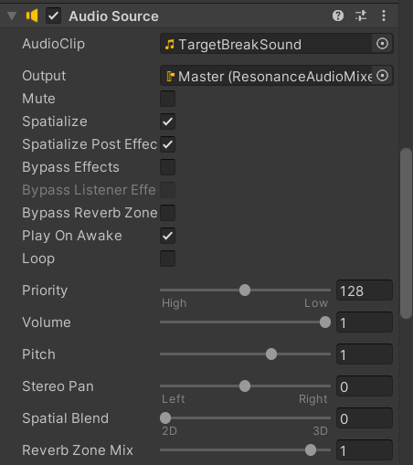
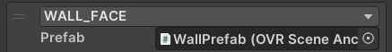
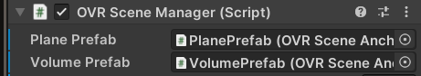

Juan-Fernando Morales (juprmora)
Qingyang Sun (qsun20)
Rohan Nikhil Venkatapuram (rnvenkat)
Final Project: Volumetric Data in Virtual Reality
Introduction
The object of our project was to write a data visualization tool in VR that could project different datasets onto a voxel grid. We had planned initially to write a tool that would compute different types of analysis on the data in shaders, however we moved away from that model due to the expenses that were presented from visualizing the data, as well as the limited development time we were given. Instead, we limited our focus on visualizing static datasets, applying transformations onto them before loading them into our program. In that, we succeeded.
Methods
Data Processing
Z-Score Anaylsis
The main form of analysis we perform is Z-Score Analysis. The Z-Score represents the amount of standard deviations a given point is away from the mean. It can be calculated as . Here,  is mean and  is standard deviation. The standard deviation and mean are calculated in a way that excludes points that are or are close to a value of 0 once normalized. This is to make it so that these two metrics are not skewed by empty space and noise that was captured in the scans. Note that we are using absolute value. Since we are interested in points that deviate considerably from the mean, we value points that deviate in either direction equally.
Python Pre-Processing
When we build a volumetric data visualizer, data preprocessing is very important. Because the original data contains multiple pieces of CT scan, which usually contains a lot of data, we need to process the data to adapt to the performance of quest 3. An example is the scanning of Bunny, whose original data is 360 slices of 512 x 512 pixels. The voxel grid is rectangular, and the X: Y: Z aspect ratio of each voxel is 1:1:1. The data consists of 16-bit integers. This means that when we render, without any data processing, we have to render 512*512*360 voxels, that is, 94,371,840 voxels, which exceeds the performance limit of Oculus Quest3. So, we decided to use Python to preprocess the data.
Pretreatment mainly includes five parts: downsampling, flattening data, processing scanned data, calculating Z score, and outputting. In our Python script, thanks to the library of numpy, we can reshape the data and downsample it by the xy axis, which is by “resolution” of each scan, and also downsample by the z axis, which is the number of slices. We can also flatten the data into a one-dimensional array, downsample it by skipping the elements with a specified step size, and reshape it into a new shape after downsampling.
For z score calculation, by calculating the Z score, we can more easily identify and analyze the abnormal values in the data and display them in VR. Especially in medical image analysis, it is helpful to distinguish different tissue types or lesions. The process of calculating the z-score first involves flattening the whole data set, which means converting the data into a one-dimensional array for easy processing. Then, the program will calculate the average and standard deviation of all non-zero values, which is usually to exclude background or irrelevant pixels, especially in medical images, where non-zero values often correspond to structures or tissues of interest. Then, the program uses this non-zero mean and standard deviation to calculate the z score of each voxel (three-dimensional pixel), which is essentially to standardize the value of each voxel, so that the average value of the resulting data set is zero and the standard deviation is one. This transformation helps to remove the scale difference of data so that data from different ranges can be compared fairly. In particular, the program also calculates the Z scores corresponding to zero values in the original data and sets these values to zero in the Z score data set. This step ensures that the original zero value remains zero in the converted data, thus avoiding introducing artificial bias in the analysis.
For the output part, the program further processes the Z-score data, including downsampling (reducing the amount of data for processing or analysis) and range standardization, and possibly squaring the data to enhance features or improve visualization. These processed data are finally converted into a 3d matrix and serialized into JSON format. In this way, data can be stored in files and can be easily read and used in the unity environment.
Base C# Runtime Processing
Doing the same tasks as described above in base C# was our original plan. This was done manually using one for-loop to read through the CT scans and store the data in arrays, figuring out what the maximum and minimum values were in the process. From there, the data was normalized, the mean and standard deviation were calculated, and the data was looped through once again to convert the data into Z-Score data if need be. The aforementioned large scale of the data resulted in significant start-up time for the application. This is because if we are doing the analysis in C#, it needed to happen during the runtime of the Unity application instead of before like with Python. This also meant we didn’t need to write to an output file, instead we would store all the CT scans as data in the Unity project’s Resource folder to access during runtime.
NumSharp Runtime Processing
The previous approach was rather slow, and one reason we had theorized for this is that approaching the problem in the way that we did removes the vectorization and other optimizations that come with Numpy. To attempt to achieve a best of both worlds scenario where we could have analysis that was both fast and in-engine, we looked into a library called NumSharp which aimed to replicate Numpy at a high level in C#. Testing NumSharp was straightforward as it was designed to be nearly one to one with Numpy, allowing us to easily move over the code we made for our preprocessing. While it was able to achieve the same visuals, it did still lack performance for reasons we will describe in the following section.
Option Comparison
We found the code written in NumSharp to be far cleaner and likely more maintainable than the same done in normal C#, so our options were between NumSharp in-engine processing and Numpy pre-processing. As mentioned in the previous section, the code difference between the two is small enough that code written to achieve one strategy could easily be re-written for another. However, we ultimately went with the Numpy pre-processing strategy due to the much faster execution. There are a few possible reasons for the faster execution. One is the hardware the code is running on. We ran the python scripts using Google Colab’s servers, which may be more powerful than Meta Quest 3. Another possibility is the amount of optimization in each library. NumSharp’s documentation mentions wanting to replicate Numpy at a high level, but the low level implementation may vary greatly. It is possible that some of the under-the-hood optimizations present in Numpy are not present in NumSharp. The final possible factor that we considered was the fact that running in-engine means that the data processing is running alongside all other Unity processes. This varies from running the analysis in Numpy, where the only thing being run at a given time is the Numpy code. These factors, and perhaps others we have yet to consider, could all be reasons as to why Numpy’s analysis was significantly faster. For that reason, we had elected to go with Numpy.
Voxel System
Now that the data has been processed, we need to display it to the user in the game. To do this, we needed to develop a system to display the Voxels (three dimensional pixels) to the user. The Voxel System we ended up going with was based on the system described in this article. This article tackled the problem by splitting the system into three different object classes: Voxel, Chunk, and World. A World was designed to represent an entire game world, and for our purposes each visualization had its own World. For example, the base Skull visual was a separate World from the Z-Score Skull visual, and both were separate from the Bunny visual. Worlds had chunks, which by default were 16 by 16 voxels. These allowed for the grouping and managing of large amounts of voxels at one time. We will discuss these two in further detail below. The simplest data structure was the Voxels, which just stored position info, if the voxel was active/visible, and the color of the voxel.
Chunk System
The chunk system in the original article worked by storing the vertices of all the triangles of all the voxels assigned to that chunk by the World in a Chunk’s renderer, optimizing by hiding unnecessary voxel faces. This was determined by figuring out which voxel faces hid other voxel faces. This could be done because the system described in the article only had voxels that were fully opaque in color. However, that is not how we visualized our voxels. Every voxel represented a data value which was in the range of 0 to 1. Voxels with a value of 0 were represented as fully transparent “blue” voxels, and voxels that had a value of 1 were fully red and opaque. This meant that, for example, a voxel representing a value of 0.3 would be a mostly transparent purple color that leaned closer to blue than red. As a result of our desire to support transparency, we couldn’t implement this optimization as described in the article. Even if a voxel’s face is “blocked off” by other voxel faces in all directions, it could still be visible if the voxel faces that are in the way are mostly transparent. As a result, we had to remove elements of this optimization.
Another change we had to make as a result of our choice to have this color system was needing to store vertex colors and changing the shader that was used. Most shaders in unity do not support vertex colors. Instead, the entire mesh is given material with one texture and color that is associated with it. In the system described in the article, there was support for multiple colors but presumably each chunk would need to be dedicated to each color. This is fine for the system in the article as there are a set amount of possible colors. However, since we were generating the colors based on the volumetric data at that point, we couldn’t do that. So, we added code to keep track of the vertex colors. We also switched our shader to use Unity’s particle shader which supports vertex colors.
World System
The world class stores all the Voxels (which in our case it retrieves from a separate class called VolumeDataReader.cs) that gets distributed to all the Chunks. Since we are not doing the voxel hiding optimization described in the article for the reasons mentioned above, the main task the World has is just creating the Chunk game objects and distributing the voxels to them. In the process of creating the chunks, the world keeps track of each Chunk’s “chunk density” (filled voxels over all possible voxels). This is done to figure out which Chunks are important, which is later used to center the chunks such that the center of the visualization is roughly at the global coordinate of the World’s position. This is to make it so that the world shows up where the user expects it to do when repositioning. Finally, we use the Chunks to figure out a bounding box for the whole world and use that to generate a Box Collider. The example uses a Mesh Collider which allows Unity to automatically generate a precise mesh around all the voxels. The problem however is that using Mesh Colliders for physics interactions (which is something that we would need to support as in handheld mode the user can hold, throw, and place the visualization down like a physical object) is very expensive. Instead, we use these bounds to create a rough collision box for the visual that is far less computationally expensive.
Controls
The controls are handled in a separate “World Manager” script that manages which visualization is active and where that World is.
Switching From Large to Handheld
The worlds are, by default, spawned in the larger view with physics and collision disabled. We created helper functions in the World class that exist to enable and disable physics, and we’ve created a separate Resizer class that allows for the resizing of GameObjects. Normally this could be done using the local scale property of every GameObject’s transform, however this will scale relative to the base size of the visualization. So, for example, if we wanted to set the size of a GameObject to be 3 Unity Units in size, we cannot do that by setting the scale to 3 in each dimension. Instead, we would need to figure out how large the GameObject is in world space and adjust the current scale to get to our desired world size, which is handled by the Resizer class. If you press the button that is mapped to shrink the world, the resizer shrinks the world and the helper functions for physics and bounds are called to enable those. The opposite occurs when you click the button to enlarge the world.
Moving and Switching Worlds
When it comes to moving the world around, there are two ways the player can do that. When the world is in handheld view, the user can physically move closer to it and pick it up with either hand by pressing that hand’s index trigger. This will use a Grabbable class we made that disables some physics interactions and attaches the World GameObject to the hand to follow it around. Upon release, movement information from the controller is used to apply appropriate acceleration to the World GameObject, the World is disconnected from the hand GameObject, and the World’s physics are re-enabled. To move Worlds in the large view, the same button that was used to make it large can be pressed again. Every time that button is pressed, the world is not only enlarged if it wasn’t already, but it is also moved to be in front of the player’s line of sight. This is done by displacing the world forward from the center eye camera GameObject in the OVRCameraRig. We switch worlds by keeping track of all possible Worlds in an array (of which there are 3 since this demo has 3 datasets). When the button to switch datasets is pressed, we move the next World, hiding all other spawned Worlds. If the World we are switching to has previously been spawned in, it is simply made active again. Otherwise, it is created.
Results
Our application can display volume data intuitively, and its specific functions include loading and parsing volumetric data (supporting image rendering with different resolutions and different slice numbers) and supporting multiple data formats. The application includes a Python program to preprocess the data to get more high-definition details. For example, when displaying a CT image, the application program can automatically delete the black part of the CT image and stack the processed image into a 3D object to display the actual object. At the same time, because the application is deployed on a VR headset, users can observe the volume data from different angles. The application allows users to rotate, zoom, and translate in a physical location, to see some details that can't be seen in normal time, and to understand the data structure better. One example is that the user can see the inside of the rendered object, to analyze the data and observe the unique structure of the data from the inside. Our application can perform Z-score analysis on the input data to realize the functions of deleting and selecting data and highlighting special data. The processed data can display the key structure of the rendered data more intuitively. Thanks to the application of VR, the application has an intuitive interactive design, which makes it easy for any user to use. At the same time, the unique preprocessing program includes special optimization of large-scale volume data to ensure that VR software can run smoothly without delay and process data efficiently without losing too many details.
Discussion
The target audience of our application includes medical students, radiologists, and other scientific professionals that may benefit from analyzing 3D data as if they were physical objects. One example is to visualize the data of CT and MRIs so that they can understand the tissue structure more intuitively, diagnose diseases, plan treatment plans, or conduct medical research through data visualization. At the same time, this application can also help researchers and students better understand the data structure. The unique VR perspective allows them to interpret data from different angles, and use volume data visualization tools in the teaching and learning process to help students understand complex concepts and structures more intuitively.
The practical application of the application program includes medical imaging, such as three-dimensional visualization of CT and MRI scanning data to help doctors diagnose and treat diseases. One example is to preprocess and render multiple CT images containing fractures, to show the specific injury location. In the field of education, by analyzing the data model, students can better understand the characteristics of the patterns of the data.
In the process of application design, some design decisions and trade-offs include performance and details. We need to weigh the rendering quality and software performance. High-quality rendering can provide clearer visual effects, but it may require more computing resources and processing time. For example, when we try to preprocess 1: 1: 1 raw data, we need a few minutes to calculate and output the corresponding files. Because of the volume of data, the calculation cost will increase significantly with the increase in resolution. Excessive downsampling of raw data may lead to the loss of key data, thus affecting people's understanding of data.
The choice to preprocess also impacts the audience/purpose of the application. Since it uses pre-processed data, the application could be seen more as a visualizer tool than an analysis tool. If we choose to lean more in the direction of analysis, we would need to support users analyzing their data in-app. This comes with the performance consequences described in the Data Processing section, but with smaller data sets or stronger technologies this could be done. The status/future of the NumSharp library is unclear, but as it and tools like it grow it may be more feasible to handle large scale data analysis in-engine. With NumSharp in particular, should the performance requirements be met we could very easily port our python preprocessing code to C#.